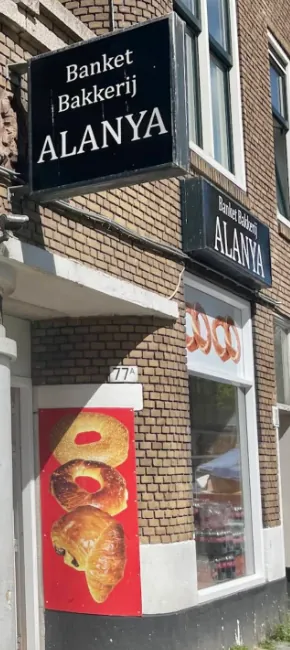
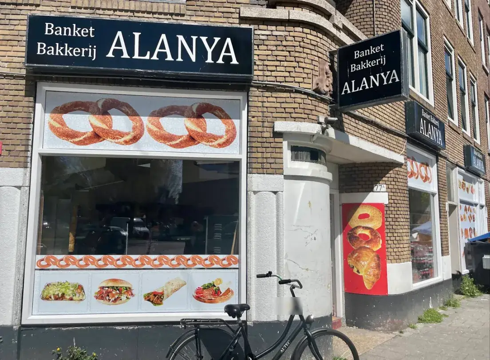
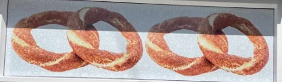
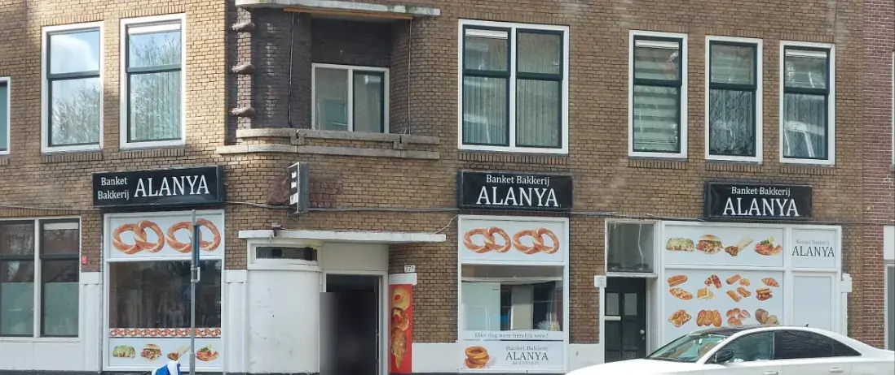

Vroeg
Als de straat nog stil is, gaat Alanya open.
De bakkerij opent vroeg in de ochtend, elke dag van de week. Ook op zaterdag en zondag.

Zacht Turks brood, simit en gebak van de Polderlaan. Vroeg open, zeven dagen per week.
Scroll mee door een dag op de hoek van de Polderlaan.

De bakkerij opent vroeg in de ochtend, elke dag van de week. Ook op zaterdag en zondag.
Het brood waar klanten over schrijven: vers, zacht en vertrouwd. Turks ekmek, zoals je het kent.
"Altijd super lekker zacht brood."Esra, via Verken Rotterdam

Je ziet hem al van ver: simit staat groot op het raam. De ring met sesam rondom; in reviews heet hij soms ook bagel.
Vaak ligt er ook pide, en platbrood voor bij het eten. En "Banket" staat niet voor niets op het bord: er is ook gebak.
Zeven dagen per week vers brood op de Polderlaan. En staat er aan het eind nog wat? Alanya doet mee met Too Good To Go, met een verrassingspakket.
Veeg door het assortiment. Zin in iets? Vraag even of het er vandaag is.
Alanya staat op Too Good To Go, met een verrassingspakket.
Illustraties, geen foto's van het eigen assortiment. Wat er ligt verschilt per dag.
Kies wat je zoekt en wanneer. Je appje staat meteen klaar; liever bellen kan natuurlijk ook.
Een vraag, geen bestelling. Zo weet je of het er is voordat je langskomt.
Altijd super lekker zacht brood.
Altijd vers. Dank je wel.
Een top Turkse bakkerij, heerlijk brood en nog meer.
De andere twee zijn vertaald uit de Engelse weergave van reviews op Google.

Banket Bakkerij Alanya
Polderlaan 75A
3074 MC Rotterdam
06 23 58 77 01
Wil je precies weten hoe laat ze op een bepaalde dag opengaan? Bel of app even.
Ja. Alanya is zeven dagen per week open, ook op zondag.
Vroeg in de ochtend, elke dag. Wil je het precies weten voor een bepaalde dag? Bel 06 23 58 77 01 of stuur een appje.
Simit en zacht Turks brood horen bij Alanya; pide is er vaak ook. Wat er precies ligt verschilt per dag, dus vraag het even.
Ja, met een verrassingspakket. Bekijk het in de app.
Polderlaan 75A, 3074 MC Rotterdam, in Rotterdam-Zuid. Je herkent de zaak aan de zwarte borden met "Banket Bakkerij ALANYA". Route.
Kom langs op de Polderlaan, of vraag even wat er vandaag is.
Voorbeeld, geen belofte. Jullie kiezen de getallen; het gaat om omzet, niet om winst.